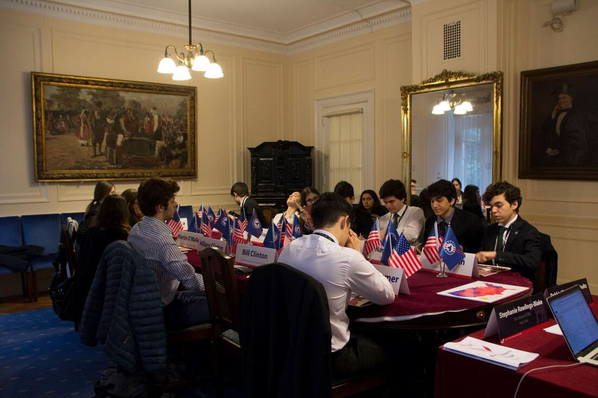

RCIMUN 2022 will take place between 12-16 April 2022 with the theme
"Crises as Catalysts: Navigating Adversities in the Information Age.""Crises as Catalysts: Navigating Adversities in the Information Age."
Robert College International Model United Nations (RCIMUN) is a THIMUN affiliated conference that provides an international platform for high school students where participants from all around the globe can unite to discuss current global issues.
The fifteenth session of RCIMUN will take place from the 12th to the 16th of April. Check out our Welcome Letter for more details about RCIMUN 2022!
FORM 1 is now open! The deadline for school registrations is Sunday, October 24th. 